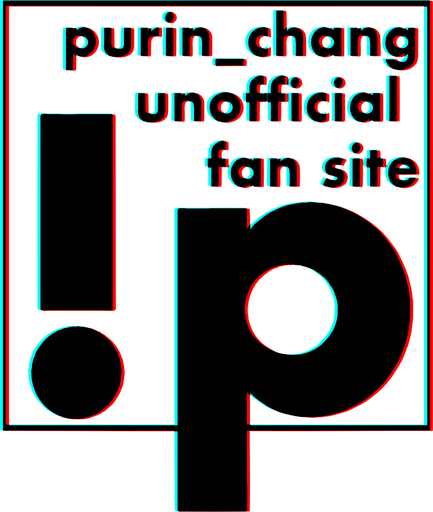

What's Purin
ぷりん
充填中…
0%
許しま戦地
許しま戦地
関西を拠点に活動するフリーダンサー。
ボーカロイド曲を中心にyoutubeで「踊ってみた」動画を月1本程度投稿しており、安定感がありつつもストイックでヒップホップなアクションと、笑いを抑える動き、そしてフルボディで表現する笑顔に定評がある。
Twitterでは金銭感覚が良いものの曜日感覚に疎く、お上品だが買ったばかりのチャミスルを帰途に落とすなどお茶目な一面もある女の子、ゴキブリを嬉々として潰す殺戮の天使である。
代表作：「KING 踊ってみた」、「メランコリック 【C.S.Portリアレンジ 】踊ってみた」「ヴァンパイア 踊ってみた」ほか
Gallery
お客様の声
20代・おねこ様の枕
兄が「ぷりんちゃんの動画が凄い」「見るだけで1日最高な気持ちになれる」「1日1回見る暇がないと手が震える」「妹氏も1回！1回だけでいいから！」と煩いので見てみたら本当に最高でした！！今では私も1日1回はぷりんちゃんさんを見ずには居られません！皆さんも1回でいいんでぷりんちゃんさんの動画見てください！最高なんで！本当にすっごいキマ(ry
吸血鬼に飼われている人間の少女（16）
自撮りも踊ってみたも歌声も話し声も、ぷりんちゃんを形成する全てが私を、いえ、世界を潤し満たします。世界平和ももうすぐでしょう...。
ニート（41）
ぷりんさんと遊んだら庭から石油が湧いてきたので石油王になれました。
あと41年間ずっとニートしていたんですけどぷりんさんに勇気付けられて明日からニートやめようって思ってます。本当にありがとうございます
東京卍会壱番隊隊長（0）
・白猫プロジェクトで限定キャラ当てて私が回復したる！！って息巻いて即死しやがる
・グル通しておやすみって言い出したくせに寝るの？って聞いてくるポンコツ
・現役JKと一緒に制服コスプレでユニバに行く猛者
・一緒に遊びにいって京都駅から夜景見てて綺麗だなーって思ってたら私帰れてんのにこんな残業してる人おるとかたまに優越感に浸んねん！！とかいいだすムスカ
・LINEの意味がほぼない
・無駄に写真が上手いポンコツ
オカリナ（27）
えっちなホテルいこうね。
配信者（260歳）
ぷりんちゃんが夢に出てきた日の朝にひひひひ孫が産まれました。母子ともに健康です。
神（3）
ぷりんちゃんのyoutubeをチャンネル登録した瞬間に全てが変わりました。庭の植物はイキイキと育ち、花は咲き空は晴れ渡り、猫は夜中に喧嘩を始めます。人々は諍いを止め、なんと滅びたといわれるドードーまでもが現れはじめたのです。ぷりんちゃんの動画を再生することでこんなにも世界が平和になったなんて誰が考えついたでしょうか。でも世界中で動画を流すにはちょっと動画のストレージ容量が不安？これからはクラウド上で好きな動画をいつまでも。もう月々の通信量で心配することはありません。そう、iPhoneならね。
社畜（ぷりんちゃんと同い年）
毎週週末をぷりんちゃんの動画で迎えています。ぷりんちゃんの動画の再生数の半分は私です。これからもずっと応援しています。でも再生数というのはYoutubeからストリーミング配信された回数をカウントしているもので、途中更新とかあったらそれぞれ２回にカウントされる可能性があるから本当に半分なのかはわからないし、もしぷりんちゃんの動画がDDos攻撃をさえてたら視聴者にかかわらず再生数は増えるしそもそもDDos攻撃とは（以下略
ぷりんの使い魔（43）
ぷりんちゃん！ぷりんちゃん！ぷりんちゃん！ぷりんちゃんぅぅうううわぁああああああああああああああああああああああん！！！あぁああああ…ああ…あっあっー！あぁああああああ！！！ぷりんちゃんぷりんちゃんぷりんちゃんぅううぁわぁああああ！！！あぁクンカクンカ！クンカクンカ！スーハースーハー！スーハースーハー！いい匂いだなぁ…くんくんんはぁっ！ぷりん・オ・キョウトノオンナたんの透け感のある茶髪の髪をクンカクンカしたいお！クンカクンカ！あぁあ！！間違えた！モフモフしたいお！モフモフ！モフモフ！髪髪モフモフ！カリカリモフモフ…きゅんきゅんきゅい！！YouTubeのぷりんちゃんたんかわいかったよぅ！！あぁぁああ…あああ…あっあぁああああ！！ふぁぁあああんんっ！！映画化決まって良かったねぷりんちゃんたん！あぁあああああ！かわいい！ぷりんちゃんたん！かわいい！あっああぁああ！ぎがぷりんも発売されて嬉し…いやぁああああああ！！！にゃああああああああん！！ぎゃああああああああ！！ぐあああああああああああ！！！ぎがぷりんなんて現実じゃない！！！！あ…YouTubeも映画化もよく考えたら…ぷ り ん ち ゃ ん ち ゃ ん は 現実 じ ゃ な い？にゃあああああああああああああん！！うぁああああああああああ！！そんなぁああああああ！！いやぁぁぁあああああああああ！！はぁああああああん！！キョウトぉおおおお！！この！ちきしょー！やめてやる！！現実なんかやめ…て…え！？見…てる？表紙絵のぷりんちゃんちゃんが僕を見てる？表紙絵のぷりんちゃんちゃんが僕を見てるぞ！ぷりんちゃんちゃんが僕を見てるぞ！挿絵のぷりんちゃんちゃんが僕を見てるぞ！！映画化のぷりんちゃんちゃんが僕に話しかけてるぞ！！！よかった…世の中まだまだ捨てたモンじゃないんだねっ！いやっほぉおおおおおおお！！！僕にはぷりんちゃんちゃんがいる！！やったよチャナ！！ひとりでできるもん！！！あ、ぎがぷりんのぷりんちゃんちゃああああああああああああああん！！いやぁあああああああああああああああ！！！！あっあんああっああんあぷりんちゃんぁあ！！ぷ、ぷりんちゃん！！ぷりんちゃんぁああああああ！！！ぷりんちゃんぁあああ！！ううっうぅうう！！俺の想いよぷりんちゃんへ届け！！キョウトのぷりんちゃんへ届け！
オレンジの球体（30）
ぷりんちゃんの動画をみていたら目が4つになりました。
( ᐡ. ̫ .ᐡ )
now pudding ...